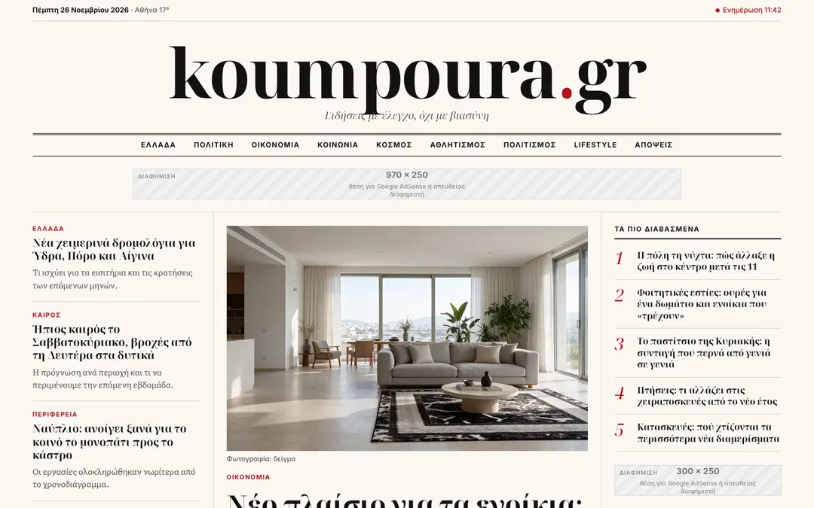
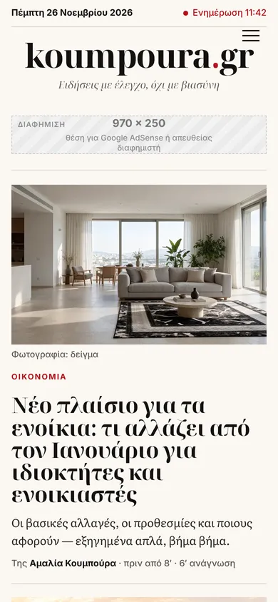

01
Το Πρωτοσέλιδο
Κλασική εφημερίδα: σοβαρή, κύρος, σαν έντυπο που ξεφυλλίζεις.
- Ταιριάζει αν
- Θέλετε κύρος και σοβαρότητα — σαν εφημερίδα με ιστορία.
- Διαφημίσεις
- 4 θέσεις στον υπολογιστή + 1 μπάρα στο κινητό · Θέσεις σε κορυφή, πλάι, ανάμεσα σε ενότητες